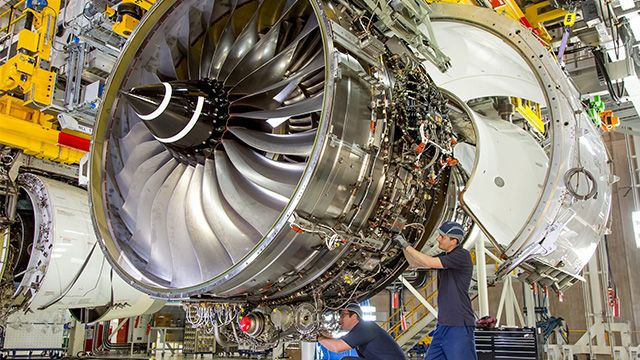
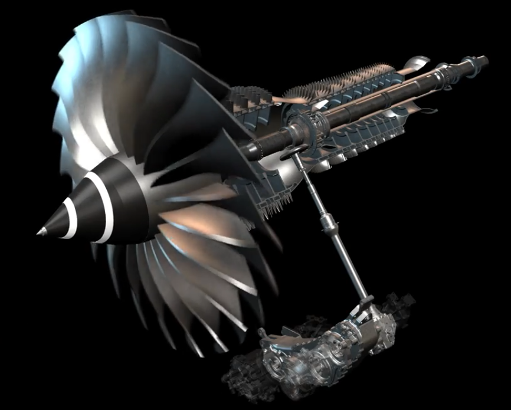

- SmarTeam
- ENOVIA
Bonjour, je suis
Amine AKAFOU
Actuellement en 3e année de BUT Génie Mécanique et Productique en alternance chez Aero Gearbox International, je me distingue par ma passion pour l'innovation industrielle et ma capacité à m'adapter à des environnements variés. Fort de compétences cultivées tout au long de mon cursus académique et professionnel, je suis déterminé à continuer de les développer. J'ambitionne donc d'intégrer une école d'ingénieurs à la rentrée 2026 afin de consolider mon parcours et de relever de nouveaux défis.

Turboréacteur Rolls-Royce Trent XWB

Système d'entraînement d'accessoires monté sur turboréacteur
Scroll